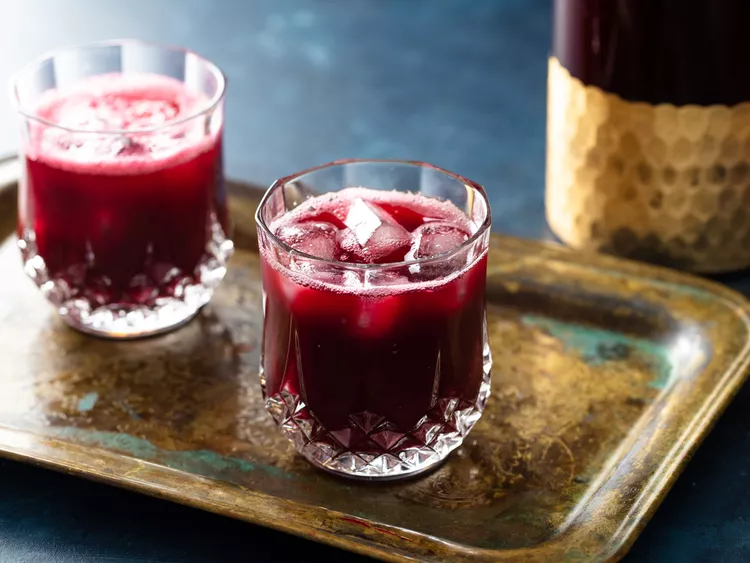

Sorrel

Description
Sorrelis a sweet, gingery, wine-hued Jamaican drink best served cold. Its primary ingredient, the blossoms of the hibiscus plant, were originally harvested and cultivated in the Caribbean
Ingredients
- 150g, about 3 cups dried sorrel (hibiscus), rinsed with cold water in a colander or strainer
- 350g peel-on fresh ginger, washed and grated
- 10 whole cloves
- 10 allspice berries, roughly crushed with the side of a knife
- 495g, about 2 1/2 cups sugar
Steps
- In a 4- or 5-quart pot or Dutch oven, bring 3 quarts water to a boil. Add sorrel, grated ginger, cloves, and crushed allspice, and boil until the sorrel begins to plump and swell, about 8 minutes.
- Remove from heat and let stand until cooled, then continue to steep in an airtight vessel in the refrigerator for at least 8 hours and up to 3 days.
- Strain the liquid through a fine-mesh strainer or through cheesecloth into a large pitcher, pressing on solids to express as much liquid as possible. If needed, strain again until it is clear of any ginger remnants. Discard solids.
- In a 2-quart saucepan, bring 2 cups of water to a boil with the sugar. Continue to cook, stirring, until sugar has completely dissolved. Remove simple syrup from heat.
- Stir simple syrup into the strained sorrel, 1/2 cup at a time, until desired sweetness level is reached.
- Chill until ready to drink. Serve over ice.